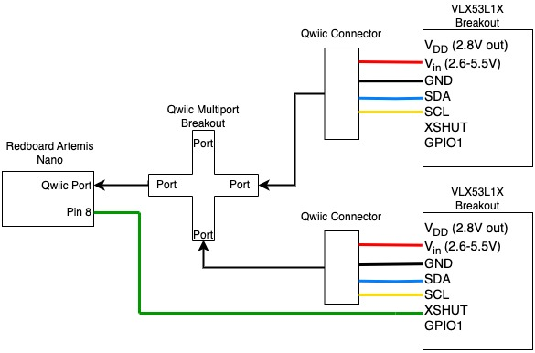

Lab 3: Time of Flight (ToF) Sensors
Prelab
ToF I2C Sensor Addresses
Rationale for Dual ToF Sensors
Using two ToF sensors provides better depth perception and
Sensor Placement
Wiring Diagram

Lab Tasks
The ToF sensors are connected as shown below. The Artemis board can be powered with a battery.

Artemis Scanning for I2C Devices
Sensor Data and Chosen I2C frameborder
Two ToF Sensors and IMU Working in Parallel
Time Vs. Distance
Time Vs. Angle
Discussion
Infrared transmission based sensors Sensitivity of sensors to colors and textures
References
I referenced Wenyi Fu’s page to help figure out the best way to format my own content.